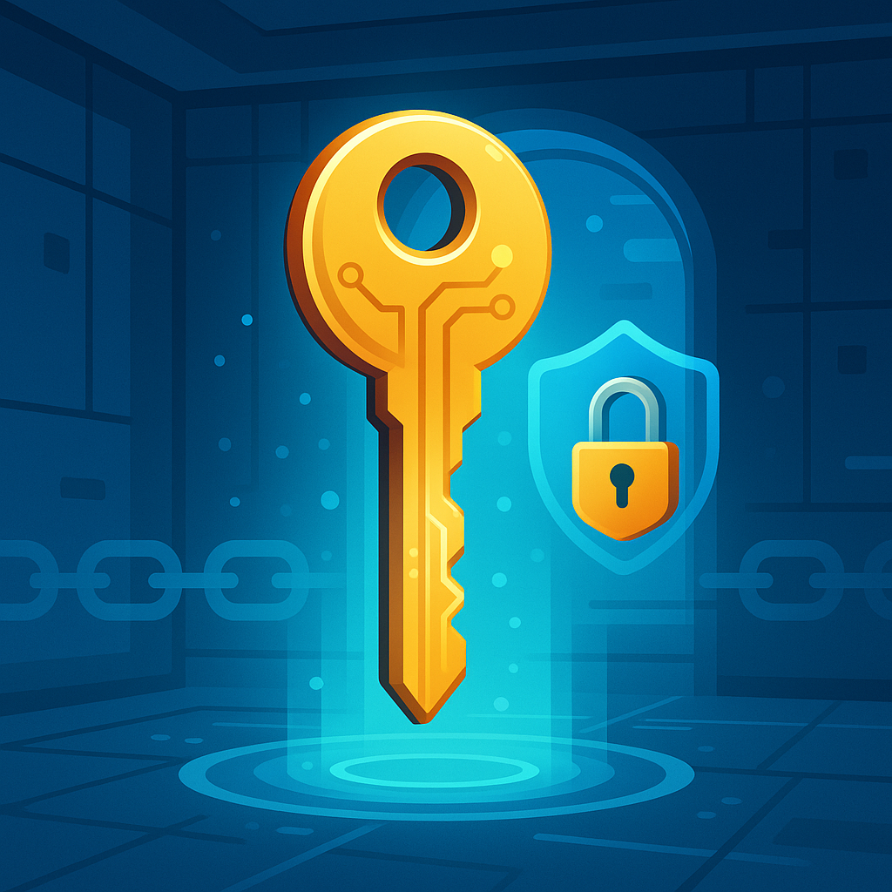

We believe security software like Whonix needs to remain Open Source and independent. Would you help sustain and grow the project? Learn more about our 11 year success story and maybe DONATE!

Get Whonix OpenPGP signing key. Verify Whonix Downloads and/or Source Code.
- Digital signatures are a tool enhancing download security. They are commonly used across the internet and nothing special to worry about.
- Optional, not required: Digital signatures are optional and not mandatory for using Whonix, but an extra security measure for <a href="../Advanced_Users/">advanced users</a>. If you've never used them before, it might be overwhelming to look into them at this stage. Just ignore them for now.
- Learn more: Curious? If you are interested in becoming more familiar with advanced computer security concepts, you can learn more about digital signatures here: <a href="../Moved:Verifying_Software_Signatures/">Verifying Software Signatures</a>
Whonix Signing Key Selection
Note: The primary signing key is now used to sign KVM images in addition to VirtualBox images, packages, and source code. The KVM signing key link has therefore been removed.
See Also
- Verifying Software Signatures
- OpenPGP
- Verify the images
- Software Signature Verification Usability Issues and Proposed Solutions
Categories: MultiWiki